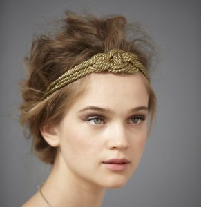

Stilizare sprancene
Acordati atentie sprincenelor! Ele dau expresie fizionomiei. Doar pensatul nu poate sa puna in valoare sprincenele asa cum o face stilizarea
Acordati atentie sprincenelor! Ele dau expresie fizionomiei. Doar pensatul nu poate sa puna in valoare sprincenele asa cum o face stilizarea
In Egipt, in perioada 3500 inainte de Hristos – 2500 dupa Hristos, atat femeile cat si barbatii se machiau pentru a-si arata puterile supranaturale in care credeau. Ca un omagiu adus Zeului Horus, oamenii isi desenau sprancenele intr-un mod grosolan. Le pictau cu praf de carbune astfel incat sa fie foarte negre, le arcuiau si chiar le alungeau. Cleopatra intruchipeaza imaginea celor mai indraznete sprancene din istorie.
In Grecia femeile maritate purtau un look natural al sprancenelor, insa cele nemaritate le accentuau cu un fel de tus negru, pentru a-si arata statutul. De asemenea, spranceana 2in1 era recunoscuta ca fiind rara, fiind o reala dovada de rabdare in a o obtine.
Femeile romane au avut mai multa libertate in maniera de a se machia decat cele din Grecia Antica. Spranceana unica era insa apreciata, fiind chiar una din caracteristicile cele mai dorite. Era considerata un semn al inteligentei, fiind purtata de cele mai distinse femei din acea perioada